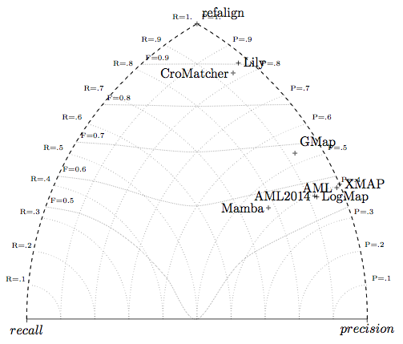

In the following, are the results of the OAEI 2015 evaluation of the benchmarks track.
This year we run a campaign with two new generated tests.
The initially generated tests with the IFC4 ontology which was provided to participants was found to be "somewhat erroneous" as the reference alignments contained only entities in the prime ontology namespace. We thus generated another test called energy. This test has also created problems with some systems, but we decided to keep it as an example, especially that some other systems have worked on it regularly with decent results. Hence, it is useful for developer to understand why this is the case.
Contrary to previous years, we have not been able to evaluate the systems in a uniform setting. This is mostly due to relaxing the policy for systems which were not properly packaged under the SEALS interface so that they could be seamlessly evaluated. Systems required extra software installation and extra software licenses which rendered evaluation uneasy.
Another reason of this situation is the limited availability of evaluators for installing software for the purpose of evaluation.
It was actually the goal of the SEALS project to automate this evaluation so that the tool installation burden was put on tool developers and the evaluation burden on evaluators. This also reflects the idea that a good tool is a tool easy to install, so in which the user does not have many reasons to not using that tool.
It would be useful to tighten the rules for evaluation so that the we can again write:
"All tests have been run entirely from the SEALS platform with the strict same protocol."and we do not end up with one evaluation setting taylored for each system. This does not mean that we should come back to the exact setting of two years ago, but that evaluators and tool developers should decide for one setting and stick to it. Otherwise, this whole exercise of system comparison does not really make sense.
As a consequence, systems have been evaluated in three different machine configurations:
However we encountered problems with one very slow matcher (LogMapBio) that has been eliminated from the pool of matcher and AML and ServOMBI which had to be killed while they were unable to match the second run of the energy data set. No timeout was explicitly set.
Reported figures are the average of 5 runs. As has already been shown in [1], there is not much variance in compliance measures across runs.
From the 21 systems listed in the 2015 results page, we were so far able to evaluate 15 systems.
Globally results are far better on the biblio test than the energy one. This may be due either on system overfit to biblio or the energy dataset being erroneous. We have to investigate on this. In particular, many of the energy run have made several matchers to fail (run 2 and 3 seems to be easier, however, apparently 2 made AML to go in a loop).
| biblio | energy | |||||
| Matching system | Prec. | F-m. | Rec. | Prec. | F-m. | Rec. |
| edna | .35(.58) | .41(.54) | .51(.50) | .50(.74) | .42(.49) | .15(.15) |
| AML2014 | .92(.94) | .55(.55) | .39(.39 | .98(.95) | .71(.69) | .23(.22) |
| AML | .99(.99) | .57(.56) | .40(.40) | 1.0(.96) | .17(.16) | .04(.04) |
| CroMatcher | .94(.68) | .88(.62) | .82(.57) | .96(.76) | .68(.50) | .21(.16) |
| DKP-AOM | NaN | NaN | 0. | .67 | .59 | .21 |
| GMap | .93(.74) | .68(.53) | .53(.41) | .32(.42) | .11(.03) | .02(.02) |
| Lily | .97(.45) | .90(.40) | .83(.36) | NaN | NaN | 0. |
| LogMap-C | .42(.41) | .41(.39) | .39(.37) | NaN | NaN | 0. |
| LogMapLite | .43 | .46 | .50 | .74 | .77 | .81 |
| LogMap | .93(.91) | .55(.52) | .40(.37) | NaN | NaN | 0. |
| Mamba | .78 | .56 | .44 | .83 | .25 | .06 |
| ServOMBI | NaN | NaN | 0. | .94 | .06 | .01 |
| XMap | 1.0 | .57 | .40 | 1.0 | .51 | .22 |
Concerning F-measure results, all tested systems are above edna with LogMap-C been lower (we excluded LogMapIM which is definitely dedicated to instance matching only as well as JarvisOM and RSDLWD which outputed no useful results). Lily and CroMatcher achieve impresive 90% and 88% F-measure. Not only these systems achieve a high precision but a high recall of 83% as well. CroMatcher maintains its good results on energy (while Lily cannot cope with the test), however LogMapLite obtain the best F-measure (of 77%) on energy.
Last year we noted that the F-measure was lower than the previous year (with a 89% from YAM++ and already a 88% from CroMatcher in 2013). This year this level is reached again.
Like last year, we can consider that we have high-precision matchers, AML and XMap, achieving near perfect to perfect precision on both tests.
We draw the triangle graphs for the biblio tests. It confirms that systems are more precision-oriented than ever: no balaced system is visible in the middle of the graph (only Mamba has a more balanced behaviour).

The computation of confidence-weighted measures is supposed to reward systems able to provide accurate confidence values. However, we observe that, in general, it tends to lower the score of systems returning confidence measures.
You can obtain the detailed results, tests by tests, by clicking on the test run number.
| algo | refalign | edna | AML2014 | AML | CroMatcher | DKP-AOM | GMap | JarvisOM | Lily | LogMap-C | LogMapIM | LogMapLite | LogMap | Mamba | RSDLWD | ServOMBI | XMAP | ||||||||||||||||||||||||||||||||||
|---|---|---|---|---|---|---|---|---|---|---|---|---|---|---|---|---|---|---|---|---|---|---|---|---|---|---|---|---|---|---|---|---|---|---|---|---|---|---|---|---|---|---|---|---|---|---|---|---|---|---|---|
| test | Prec. | FMeas. | Rec. | Prec. | FMeas. | Rec. | Prec. | FMeas. | Rec. | Prec. | FMeas. | Rec. | Prec. | FMeas. | Rec. | Prec. | FMeas. | Rec. | Prec. | FMeas. | Rec. | Prec. | FMeas. | Rec. | Prec. | FMeas. | Rec. | Prec. | FMeas. | Rec. | Prec. | FMeas. | Rec. | Prec. | FMeas. | Rec. | Prec. | FMeas. | Rec. | Prec. | FMeas. | Rec. | Prec. | FMeas. | Rec. | Prec. | FMeas. | Rec. | Prec. | FMeas. | Rec. |
| biblio | 1,00 | 1,00 | 1,00 | 0,35 | 0,41 | 0,51 | 0,92 | 0,55 | 0,39 | 0,99 | 0,57 | 0,40 | 0,94 | 0,88 | 0,82 | NaN | NaN | 0,00 | 0,93 | 0,68 | 0,53 | NaN | NaN | 0,00 | 0,97 | 0,90 | 0,83 | 0,42 | 0,41 | 0,39 | NaN | NaN | 0,00 | 0,43 | 0,46 | 0,50 | 0,93 | 0,55 | 0,39 | 0,78 | 0,56 | 0,44 | NaN | NaN | 0,00 | NaN | NaN | 0,00 | 1,00 | 0,57 | 0,40 |
| 1 | 1,00 | 1,00 | 1,00 | 0,35 | 0,41 | 0,51 | 0,92 | 0,55 | 0,39 | 0,99 | 0,57 | 0,40 | 0,94 | 0,88 | 0,82 | NaN | NaN | 0,00 | 0,93 | 0,67 | 0,53 | NaN | NaN | 0,00 | 0,96 | 0,89 | 0,83 | 0,42 | 0,42 | 0,41 | NaN | NaN | 0,00 | 0,43 | 0,46 | 0,50 | 0,93 | 0,57 | 0,41 | 0,78 | 0,56 | 0,44 | NaN | NaN | 0,00 | NaN | NaN | 0,00 | 1,00 | 0,57 | 0,40 |
| 2 | 1,00 | 1,00 | 1,00 | 0,35 | 0,41 | 0,51 | 0,92 | 0,54 | 0,38 | 0,99 | 0,56 | 0,39 | 0,94 | 0,88 | 0,82 | NaN | NaN | 0,00 | 0,93 | 0,68 | 0,53 | NaN | NaN | 0,00 | 0,97 | 0,90 | 0,84 | 0,43 | 0,41 | 0,39 | NaN | NaN | 0,00 | 0,43 | 0,46 | 0,50 | 0,94 | 0,55 | 0,39 | 0,78 | 0,56 | 0,44 | NaN | NaN | 0,00 | NaN | NaN | 0,00 | 1,00 | 0,57 | 0,40 |
| 3 | 1,00 | 1,00 | 1,00 | 0,35 | 0,41 | 0,50 | 0,92 | 0,56 | 0,40 | 0,99 | 0,57 | 0,40 | 0,94 | 0,88 | 0,82 | NaN | NaN | 0,00 | 0,93 | 0,68 | 0,53 | NaN | NaN | 0,00 | 0,97 | 0,90 | 0,83 | 0,42 | 0,40 | 0,38 | NaN | NaN | 0,00 | 0,43 | 0,46 | 0,50 | 0,92 | 0,54 | 0,38 | 0,78 | 0,56 | 0,44 | NaN | NaN | 0,00 | NaN | NaN | 0,00 | 1,00 | 0,58 | 0,41 |
| 4 | 1,00 | 1,00 | 1,00 | 0,35 | 0,41 | 0,51 | 0,91 | 0,54 | 0,38 | 0,99 | 0,56 | 0,39 | 0,94 | 0,88 | 0,82 | NaN | NaN | 0,00 | 0,93 | 0,68 | 0,53 | NaN | NaN | 0,00 | 0,97 | 0,90 | 0,83 | 0,43 | 0,40 | 0,39 | NaN | NaN | 0,00 | 0,43 | 0,46 | 0,50 | 0,93 | 0,55 | 0,39 | 0,78 | 0,56 | 0,44 | NaN | NaN | 0,00 | NaN | NaN | 0,00 | 1,00 | 0,57 | 0,40 |
| 5 | 1,00 | 1,00 | 1,00 | 0,35 | 0,41 | 0,50 | 0,92 | 0,55 | 0,39 | 0,99 | 0,57 | 0,40 | 0,94 | 0,88 | 0,82 | NaN | NaN | 0,00 | 0,93 | 0,67 | 0,53 | NaN | NaN | 0,00 | 0,97 | 0,90 | 0,84 | 0,41 | 0,40 | 0,39 | NaN | NaN | 0,00 | 0,43 | 0,46 | 0,50 | 0,92 | 0,55 | 0,39 | 0,78 | 0,56 | 0,44 | NaN | NaN | 0,00 | NaN | NaN | 0,00 | 1,00 | 0,58 | 0,40 |
| biblio weighted | 1,00 | 1,00 | 1,00 | 0,58 | 0,54 | 0,50 | 0,94 | 0,55 | 0,39 | 0,99 | 0,56 | 0,40 | 0,68 | 0,62 | 0,57 | NaN | NaN | 0,00 | 0,74 | 0,53 | 0,41 | NaN | NaN | 0,00 | 0,45 | 0,40 | 0,36 | 0,41 | 0,39 | 0,37 | NaN | NaN | 0,00 | 0,43 | 0,46 | 0,50 | 0,91 | 0,52 | 0,37 | 0,78 | 0,56 | 0,44 | NaN | NaN | 0,00 | NaN | NaN | 0,00 | 1,00 | 0,57 | 0,40 |
| 1 | 1,00 | 1,00 | 1,00 | 0,58 | 0,54 | 0,50 | 0,94 | 0,55 | 0,39 | 0,99 | 0,57 | 0,40 | 0,68 | 0,62 | 0,57 | NaN | NaN | 0,00 | 0,74 | 0,53 | 0,41 | NaN | NaN | 0,00 | 0,45 | 0,40 | 0,36 | 0,41 | 0,40 | 0,39 | NaN | NaN | 0,00 | 0,43 | 0,46 | 0,50 | 0,90 | 0,54 | 0,39 | 0,78 | 0,56 | 0,44 | NaN | NaN | 0,00 | NaN | NaN | 0,00 | 1,00 | 0,57 | 0,40 |
| 2 | 1,00 | 1,00 | 1,00 | 0,58 | 0,54 | 0,50 | 0,94 | 0,55 | 0,38 | 0,99 | 0,56 | 0,39 | 0,68 | 0,62 | 0,57 | NaN | NaN | 0,00 | 0,73 | 0,53 | 0,41 | NaN | NaN | 0,00 | 0,45 | 0,40 | 0,36 | 0,42 | 0,39 | 0,37 | NaN | NaN | 0,00 | 0,43 | 0,46 | 0,50 | 0,91 | 0,52 | 0,37 | 0,78 | 0,56 | 0,44 | NaN | NaN | 0,00 | NaN | NaN | 0,00 | 1,00 | 0,57 | 0,40 |
| 3 | 1,00 | 1,00 | 1,00 | 0,58 | 0,54 | 0,50 | 0,94 | 0,56 | 0,40 | 0,99 | 0,57 | 0,40 | 0,68 | 0,62 | 0,57 | NaN | NaN | 0,00 | 0,74 | 0,53 | 0,41 | NaN | NaN | 0,00 | 0,45 | 0,40 | 0,36 | 0,42 | 0,39 | 0,37 | NaN | NaN | 0,00 | 0,43 | 0,46 | 0,50 | 0,91 | 0,52 | 0,37 | 0,78 | 0,56 | 0,44 | NaN | NaN | 0,00 | NaN | NaN | 0,00 | 1,00 | 0,58 | 0,41 |
| 4 | 1,00 | 1,00 | 1,00 | 0,58 | 0,54 | 0,50 | 0,94 | 0,54 | 0,38 | 0,99 | 0,56 | 0,39 | 0,68 | 0,62 | 0,57 | NaN | NaN | 0,00 | 0,74 | 0,53 | 0,41 | NaN | NaN | 0,00 | 0,45 | 0,41 | 0,37 | 0,41 | 0,39 | 0,36 | NaN | NaN | 0,00 | 0,43 | 0,46 | 0,50 | 0,91 | 0,52 | 0,37 | 0,78 | 0,56 | 0,44 | NaN | NaN | 0,00 | NaN | NaN | 0,00 | 1,00 | 0,57 | 0,40 |
| 5 | 1,00 | 1,00 | 1,00 | 0,58 | 0,54 | 0,50 | 0,94 | 0,55 | 0,39 | 0,99 | 0,56 | 0,40 | 0,68 | 0,62 | 0,57 | NaN | NaN | 0,00 | 0,74 | 0,53 | 0,41 | NaN | NaN | 0,00 | 0,45 | 0,40 | 0,37 | 0,40 | 0,38 | 0,36 | NaN | NaN | 0,00 | 0,43 | 0,46 | 0,50 | 0,90 | 0,52 | 0,37 | 0,78 | 0,56 | 0,44 | NaN | NaN | 0,00 | NaN | NaN | 0,00 | 1,00 | 0,58 | 0,40 |
| energy | 1,00 | 1,00 | 1,00 | 0,50 | 0,42 | 0,15 | 0,98 | 0,71 | 0,23 | 1,00 | 0,17 | 0,04 | 0,96 | 0,68 | 0,21 | 0,67 | 0,59 | 0,21 | 0,32 | 0,11 | 0,02 | NaN | NaN | 0,00 | NaN | NaN | 0,00 | NaN | NaN | 0,00 | NaN | NaN | 0,00 | 0,74 | 0,77 | 0,81 | NaN | NaN | 0,00 | 0,83 | 0,25 | 0,06 | NaN | NaN | 0,00 | 0,94 | 0,06 | 0,01 | 1,00 | 0,51 | 0,22 |
| 1 | 1,00 | 1,00 | 1,00 | NaN | NaN | 0,00 | NaN | NaN | 0,00 | NaN | NaN | 0,00 | NaN | NaN | 0,00 | NaN | NaN | 0,00 | 0,00 | NaN | 0,00 | NaN | NaN | 0,00 | NaN | NaN | 0,00 | NaN | NaN | 0,00 | NaN | NaN | 0,00 | 0,74 | 0,77 | 0,81 | NaN | NaN | 0,00 | NaN | NaN | 0,00 | NaN | NaN | 0,00 | NaN | NaN | 0,00 | 1,00 | 0,65 | 0,49 |
| 2 | 1,00 | 1,00 | 1,00 | 0,50 | 0,35 | 0,27 | 0,97 | 0,58 | 0,41 | 1,00 | 0,15 | 0,08 | 0,96 | 0,55 | 0,39 | 0,47 | 0,42 | 0,39 | 0,73 | 0,09 | 0,05 | NaN | NaN | 0,00 | NaN | NaN | 0,00 | NaN | NaN | 0,00 | NaN | NaN | 0,00 | 0,74 | 0,77 | 0,81 | NaN | NaN | 0,00 | 0,81 | 0,23 | 0,14 | NaN | NaN | 0,00 | 0,94 | 0,06 | 0,03 | NaN | NaN | 0,00 |
| 3 | 1,00 | 1,00 | 1,00 | 0,50 | 0,49 | 0,47 | 0,98 | 0,83 | 0,73 | 1,00 | 0,18 | 0,10 | 0,96 | 0,80 | 0,68 | 0,86 | 0,75 | 0,66 | 0,89 | 0,13 | 0,07 | NaN | NaN | 0,00 | NaN | NaN | 0,00 | NaN | NaN | 0,00 | NaN | NaN | 0,00 | 0,74 | 0,77 | 0,81 | NaN | NaN | 0,00 | 0,85 | 0,26 | 0,15 | NaN | NaN | 0,00 | 0,94 | 0,05 | 0,02 | NaN | NaN | 0,00 |
| 4 | 1,00 | 1,00 | 1,00 | NaN | NaN | 0,00 | NaN | NaN | 0,00 | NaN | NaN | 0,00 | NaN | NaN | 0,00 | NaN | NaN | 0,00 | 0,00 | NaN | 0,00 | NaN | NaN | 0,00 | NaN | NaN | 0,00 | NaN | NaN | 0,00 | NaN | NaN | 0,00 | 0,74 | 0,77 | 0,81 | NaN | NaN | 0,00 | NaN | NaN | 0,00 | NaN | NaN | 0,00 | NaN | NaN | 0,00 | 1,00 | 0,24 | 0,14 |
| 5 | 1,00 | 1,00 | 1,00 | NaN | NaN | 0,00 | NaN | NaN | 0,00 | NaN | NaN | 0,00 | NaN | NaN | 0,00 | NaN | NaN | 0,00 | 0,00 | NaN | 0,00 | NaN | NaN | 0,00 | NaN | NaN | 0,00 | NaN | NaN | 0,00 | NaN | NaN | 0,00 | 0,74 | 0,77 | 0,81 | NaN | NaN | 0,00 | NaN | NaN | 0,00 | NaN | NaN | 0,00 | NaN | NaN | 0,00 | 1,00 | 0,65 | 0,49 |
| energy weighted | 1,00 | 1,00 | 1,00 | 0,74 | 0,49 | 0,15 | 0,95 | 0,69 | 0,22 | 0,96 | 0,16 | 0,04 | 0,72 | 0,50 | 0,16 | 0,67 | 0,59 | 0,21 | 0,42 | 0,03 | 0,02 | NaN | NaN | 0,00 | NaN | NaN | 0,00 | NaN | NaN | 0,00 | NaN | NaN | 0,00 | 0,74 | 0,77 | 0,81 | NaN | NaN | 0,00 | 0,83 | 0,25 | 0,06 | NaN | NaN | 0,00 | 0,94 | 0,06 | 0,01 | 1,00 | 0,51 | 0,22 |
| 1 | 1,00 | 1,00 | 1,00 | NaN | NaN | 0,00 | NaN | NaN | 0,00 | NaN | NaN | 0,00 | NaN | NaN | 0,00 | NaN | NaN | 0,00 | 0,26 | 0,00 | 0,00 | NaN | NaN | 0,00 | NaN | NaN | 0,00 | NaN | NaN | 0,00 | NaN | NaN | 0,00 | 0,74 | 0,77 | 0,81 | NaN | NaN | 0,00 | NaN | NaN | 0,00 | NaN | NaN | 0,00 | NaN | NaN | 0,00 | 1,00 | 0,65 | 0,49 |
| 2 | 1,00 | 1,00 | 1,00 | 0,72 | 0,39 | 0,27 | 0,95 | 0,56 | 0,40 | 0,96 | 0,14 | 0,08 | 0,72 | 0,40 | 0,28 | 0,47 | 0,42 | 0,39 | 0,62 | 0,07 | 0,04 | NaN | NaN | 0,00 | NaN | NaN | 0,00 | NaN | NaN | 0,00 | NaN | NaN | 0,00 | 0,74 | 0,77 | 0,81 | NaN | NaN | 0,00 | 0,81 | 0,23 | 0,14 | NaN | NaN | 0,00 | 0,94 | 0,06 | 0,03 | NaN | NaN | 0,00 |
| 3 | 1,00 | 1,00 | 1,00 | 0,75 | 0,58 | 0,47 | 0,95 | 0,81 | 0,70 | 0,96 | 0,18 | 0,10 | 0,72 | 0,59 | 0,50 | 0,86 | 0,75 | 0,66 | 0,70 | 0,09 | 0,05 | NaN | NaN | 0,00 | NaN | NaN | 0,00 | NaN | NaN | 0,00 | NaN | NaN | 0,00 | 0,74 | 0,77 | 0,81 | NaN | NaN | 0,00 | 0,85 | 0,26 | 0,15 | NaN | NaN | 0,00 | 0,94 | 0,05 | 0,02 | NaN | NaN | 0,00 |
| 4 | 1,00 | 1,00 | 1,00 | NaN | NaN | 0,00 | NaN | NaN | 0,00 | NaN | NaN | 0,00 | NaN | NaN | 0,00 | NaN | NaN | 0,00 | 0,25 | 0,00 | 0,00 | NaN | NaN | 0,00 | NaN | NaN | 0,00 | NaN | NaN | 0,00 | NaN | NaN | 0,00 | 0,74 | 0,77 | 0,81 | NaN | NaN | 0,00 | NaN | NaN | 0,00 | NaN | NaN | 0,00 | NaN | NaN | 0,00 | 1,00 | 0,24 | 0,14 |
| 5 | 1,00 | 1,00 | 1,00 | NaN | NaN | 0,00 | NaN | NaN | 0,00 | NaN | NaN | 0,00 | NaN | NaN | 0,00 | NaN | NaN | 0,00 | 0,25 | 0,00 | 0,00 | NaN | NaN | 0,00 | NaN | NaN | 0,00 | NaN | NaN | 0,00 | NaN | NaN | 0,00 | 0,74 | 0,77 | 0,81 | NaN | NaN | 0,00 | NaN | NaN | 0,00 | NaN | NaN | 0,00 | NaN | NaN | 0,00 | 1,00 | 0,65 | 0,49 |
n/a: result alignment not provided or not readable
NaN: division per zero, likely due to empty alignment.
The full set of resulting alignments can be found at biblio.zip and energy.zip.
This track has been performed by Jérôme Euzenat with the invaluable help of Cássia Trojahn dos Santos. If you have any problems working with the ontologies, any questions or suggestions, feel free to contact him
[1] Jérôme Euzenat, Maria Roşoiu, Cássia Trojahn dos Santos. Ontology matching benchmarks: generation, stability, and discriminability, Journal of web semantics 21:30-48, 2013 [DOI:10.1016/j.websem.2013.05.002]